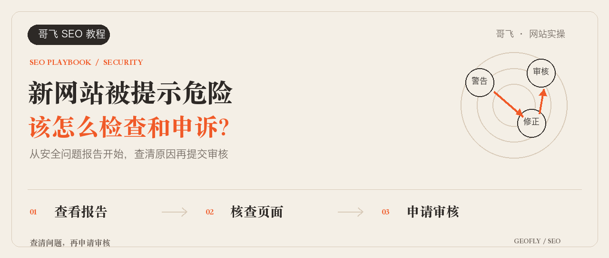
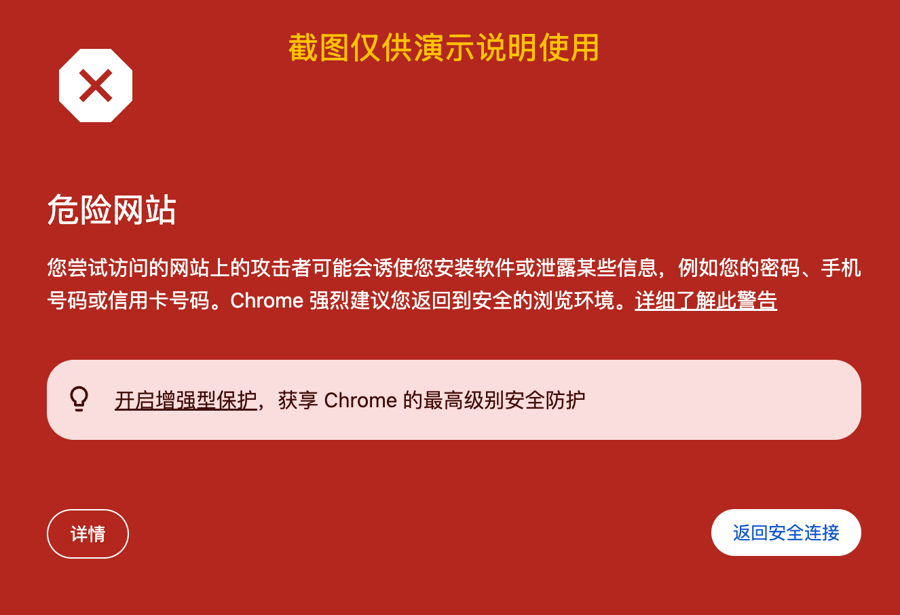
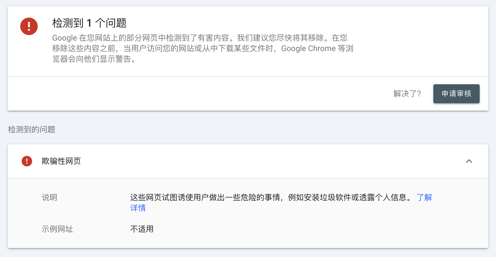
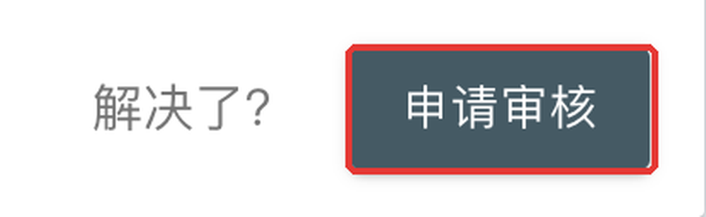
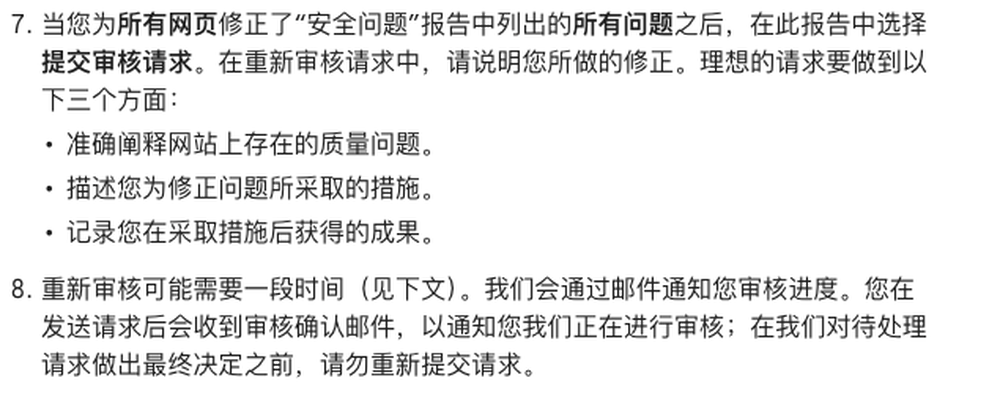
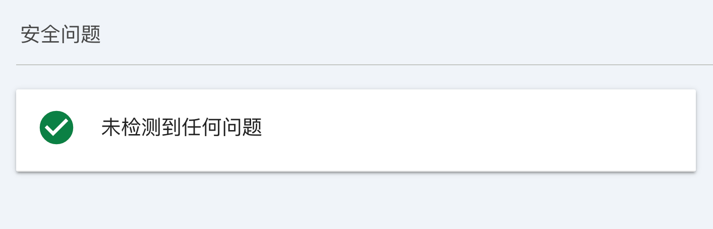

大家好，我是哥飞。
最近一年多，时不时就有群友来问：新站刚上线一两天，用 Chrome 一打开，整页红色警告，“危险网站”。

网站能打开，功能也正常，用户却被浏览器挡在了外面。
先别慌。这种情况，大多数是误判，而且有一个很常见的原因。
先确认：Google 到底报了什么
浏览器的红色警告有两种，要先分清。
如果写的是“您的连接不是私密连接”，那是证书或 HTTPS 的问题，去查证书配置就行，和这篇说的不是一回事。
如果写的是“危险网站”，就打开 Google Search Console，选中这个网站，在左侧进入“安全问题和人工处置措施”里的“安全问题”。
群友遇到的，大多是下面这种：“欺骗性网页”。

意思是，Google 认为你的网页可能在骗用户，比如诱导他们输入账号密码、透露个人信息。
可你明明只是做了个正常的工具站，怎么就成了“骗子”？
最常见的原因：你的站，长得太像别人了
我总结过，最有可能的情况是这样的：
你的新站（叫它 A）用的域名，和一个已经被 Google 收录的老站（叫它 B）很像。比如名字一样只是后缀不同，或者后缀一样、只差一两个字母。
光是域名像，还不一定会被提示。如果你的网站标题、页面内容也和 B 很接近，就很容易被判了。
因为在 Google 看来，A 很可能是照着 B 做的钓鱼网站，目的就是让 B 的用户认错，在 A 上输入账号密码。
这件事对做工具站的朋友特别常见。我们经常是按一个关键词去注册域名、做网站，同一个关键词，别人早就做过了。域名自然很像，页面功能和标题也差不多，于是就撞上了。
所以上新站之前，可以先留意两点：
- 注册域名时，搜一下有没有已经做起来的同名站，尤其是只差后缀或一两个字母的；
- 标题、首屏、Logo 要清楚写出你自己的品牌名，不要沿用模板里别人的名字和标志。
如果是误判，直接申诉就好
如果你的站确实只是因为做了同一个词、域名像而被提示，没关系，去 GSC 申诉就行。
申诉前，先把容易让人认错的地方改掉：模板里残留的别家品牌名、相似的 Logo、看起来像别人家的登录页。
然后回到“安全问题”，点“申请审核”。

审核说明不用长，把三件事说清楚：你的网站是做什么的，你检查和修改了什么，为什么你不是在仿冒别人。

比如你的站是做图片压缩的，检查后发现首页还留着模板里别家的品牌名，就可以这样写：
网站提供图片压缩服务。我们检查了首页、登录页和付款页，发现首页仍保留了模板中的另一品牌名称，现已替换为本站名称，并删除了容易造成误认的标志。本站与该品牌无任何关联，无意模仿，请重新审核。
提交之后是人工审核，Google 官方说可能要几天到几周。等待期间不要重复提交。
如果不是撞名，再查这些
如果你的域名和别人一点都不像，那就要认真查一下网站本身了。重点看这几处：
- 按钮点下去，是不是跳到了意想不到的页面；
- 页面引用的广告、第三方脚本，有没有带来异常弹窗或跳转；
- 有没有来路不明的下载。
问题如果出在共用的模板或脚本里，所有用到它的页面都要改，不要只改报告里列出来的那一个网址。报告里的“示例网址”有时也会显示“不适用”，这时候更要把整站走一遍。
另外，也可以去 Google 安全浏览网站状态查询 看一下。不过我试过，太新的网站在这里往往查不到，可能是数据还没同步，查不到不代表没问题。如果 GSC 里没有报问题，浏览器却一直警告，可以通过安全浏览误判反馈入口提交网址和说明。
审核通过后，再确认一遍
审核通过后，“安全问题”会回到正常状态。

这时候再用 Chrome 打开原来被拦的网址，确认红色警告已经没了，这件事才算处理完。
如果没通过，就看反馈里说的是什么，把相关页面改了再提交，不要只改一段说明、页面原样不动地再交一次。
想进一步了解 Google 是怎么读懂一个网页的，可以看我之前写的《如何制作出 SEO 友好的网页？先从学习 Google 是如何理解我们网页开始》。
新站上线后遇到的这类具体问题，也是我和社群朋友们平时经常一起研究和解决的事情。